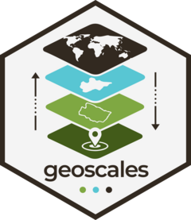
Visualization with ggplot2
Source:vignettes/articles/visualization.Rmd
visualization.RmdThe viz surface at a glance
| kind | functions | use when |
|---|---|---|
| composable layers |
geom_geoscale(), theme_geoscale()
|
you are building your own ggplot() and want a
choropleth as one layer among others |
| assembled figures |
geoscale_autoplot() (structure icicle; also
plot()), geoscale_plot() (one-call
choropleth) |
you want a finished figure in one call |
| layout / geometry workers |
geoscale_layout(),
geoscale_geometry()
|
you want the plain frames behind the figures |
This article needs maps, so it runs on two fixtures that stay out of
the package by design (geoscales ships integration code, not data): the
offline energyRt::utopia_geoscale() reference layout, and —
for the real-world tour — Iceland from Natural Earth’s admin-1
layer.
The integration contract
geom_geoscale() mirrors the design of
timescales::geom_calendar(): the geoscale inputs are column
names (z=, region=), not
aes() mappings, and each call returns a standard
ggplot2::geom_sf() layer whose data is derived from the
plot data — the object’s geometry is dissolved at the requested
geoframe (via geoscale_geometry()), the value
column is aggregated per region with fun, and everything
else — scales, facets, themes, extra layers — composes through the
normal ggplot2 path.
Choropleths, composably
gs <- energyRt::utopia_geoscale("honeycomb")
gs
#> Geoscale: utopia
#> Description: UTOPIA reference regions, nested nation -> zone -> region
#> Geoframes (3, coarsest first):
#> - nation (1)
#> - zone (3)
#> - region (11)
#> Atoms: 11
#> Weights: area (default: area)
#> CRS: NA
#> Geometry: attached (11 features)
x <- tibble(region = geoscale_regions(gs, "region"),
capacity = c(5, 3, 8, 2, 6, 4, 7, 1, 9, 2, 5))
ggplot(x) +
geom_geoscale(gs = gs, z = "capacity", geoframe = "region") +
scale_fill_viridis_c(option = "G") +
labs(title = "Capacity by region", fill = "GW") +
theme_geoscale()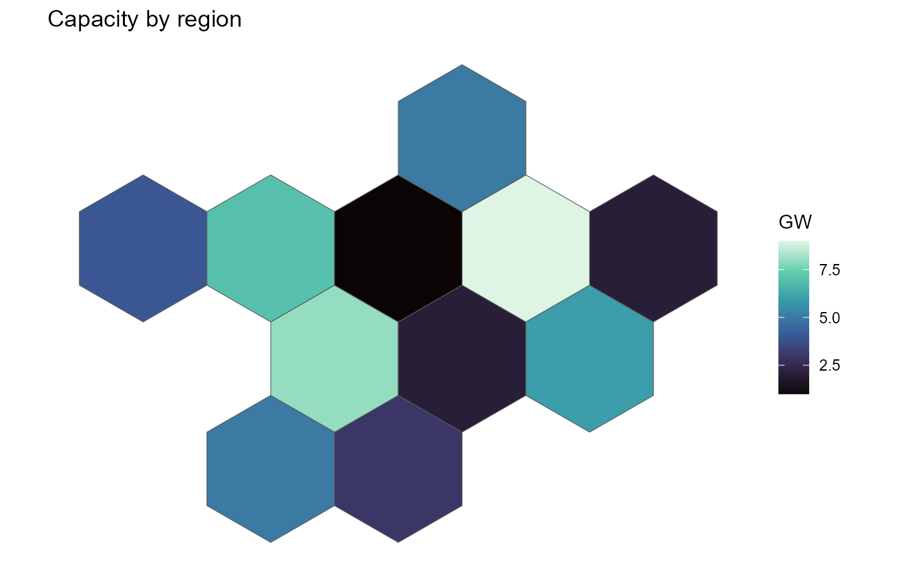
With z = NULL the layer draws plain boundaries — useful
under other layers:
ggplot() +
geom_geoscale(gs = gs, colour = "grey40", fill = "grey93") +
theme_geoscale()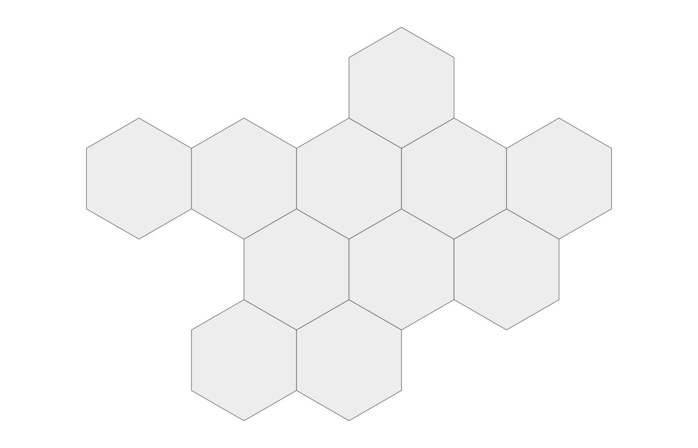
Recasting, seen on the map
The same data drawn at another geoframe is one geoframe=
away — the layer dissolves and aggregates for you (here with
fun = sum for an extensive quantity):
ggplot(x) +
geom_geoscale(gs = gs, z = "capacity", geoframe = "zone", fun = sum) +
scale_fill_viridis_c(option = "G") +
labs(title = "The same capacity, by zone", fill = "GW") +
theme_geoscale()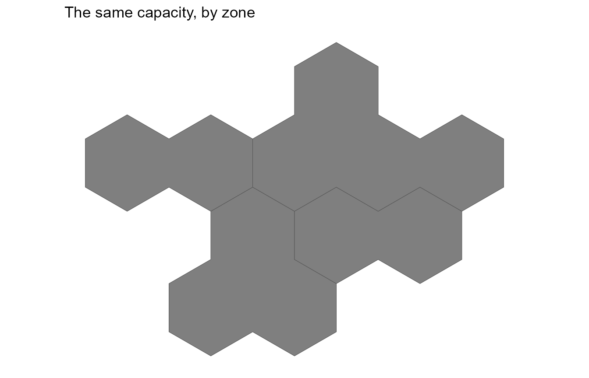
For full control, recast_geoscale() first and draw the
result — the explicit route makes the rule visible (and lets intensive
quantities use weighted_mean):
x |>
recast_geoscale(gs, from = "region", to = "zone", rule = "sum") |>
ggplot() +
geom_geoscale(gs = gs, z = "capacity", geoframe = "zone") +
scale_fill_viridis_c(option = "G") +
theme_geoscale()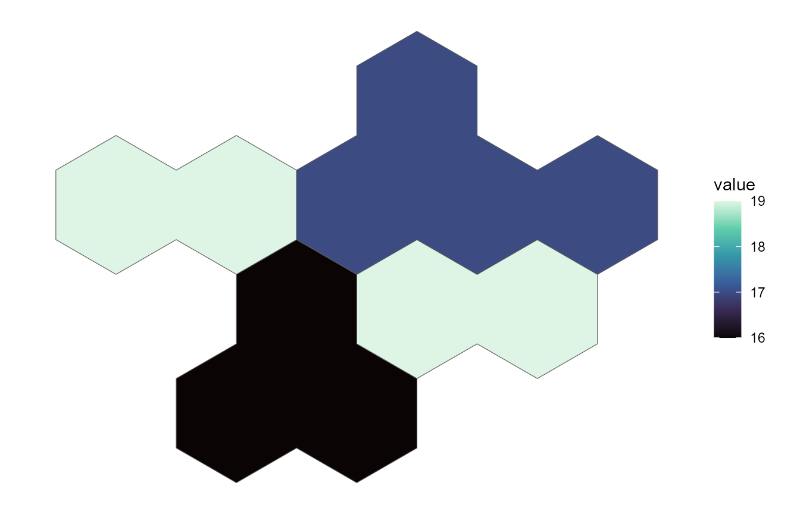
One panel per geoframe
Dissolved shapes are plain sf objects, so faceting a hierarchy is a
small |> chain over
geoscale_geometry():
shapes <- geoscale_geoframes(gs) |>
lapply(function(gf) {
geoscale_geometry(gs, gf) |>
sf::st_sf() |>
mutate(geoframe = gf, .before = 1) |>
rename(code = 2)
}) |>
bind_rows() |>
mutate(geoframe = factor(geoframe, levels = geoscale_geoframes(gs)))
ggplot(shapes) +
geom_sf(aes(fill = code), show.legend = FALSE) +
facet_wrap(~geoframe) +
scale_fill_viridis_d(option = "G") +
theme_geoscale()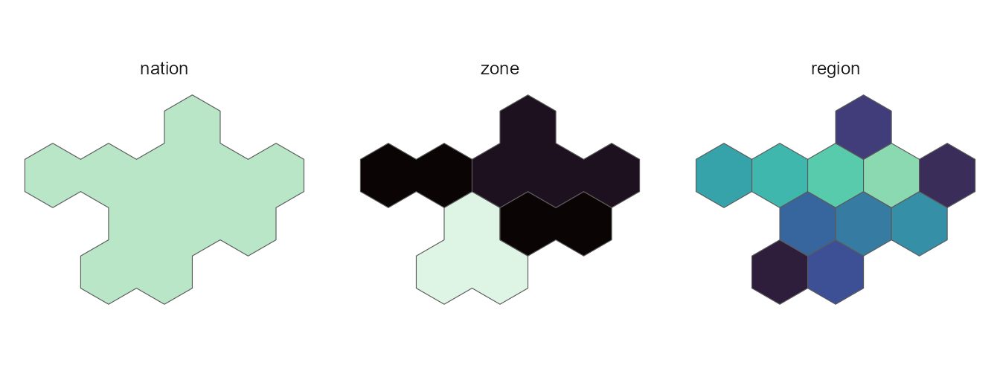
Structure figures
The assembled counterparts need no geometry at all.
geoscale_autoplot() (also plot()) draws the
hierarchy as an icicle; its plain-data frame is
geoscale_layout():
plot(gs)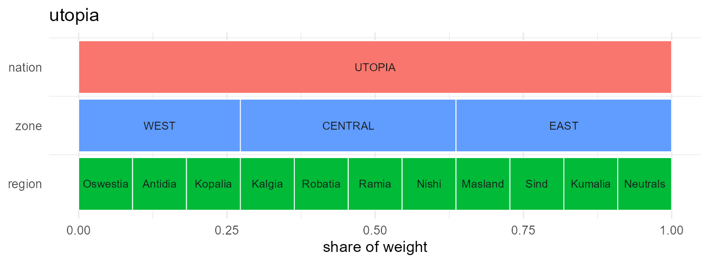
head(geoscale_layout(gs), 4)
#> geoframe region rank xmin xmax ymin ymax weight share
#> 1 nation UTOPIA 1 0.0000000 1.0000000 2 2.9 62.21484 1.0000000
#> 2 zone WEST 2 0.0000000 0.2727273 1 1.9 16.96768 0.2727273
#> 3 zone CENTRAL 2 0.2727273 0.6363636 1 1.9 22.62358 0.3636364
#> 4 zone EAST 2 0.6363636 1.0000000 1 1.9 22.62358 0.3636364The icicle carries data too — data =/z =
fill every band with the value recast to that geoframe (atoms keep their
own values, coarser bands get the weighted mean):
cap <- data.frame(region = geoscale_regions(gs, "region"),
mw = c(40, 15, 75, 30, 60, 22, 8, 55, 34, 12, 48))
geoscale_autoplot(gs, data = cap, z = "mw", label = TRUE) +
labs(fill = "MW")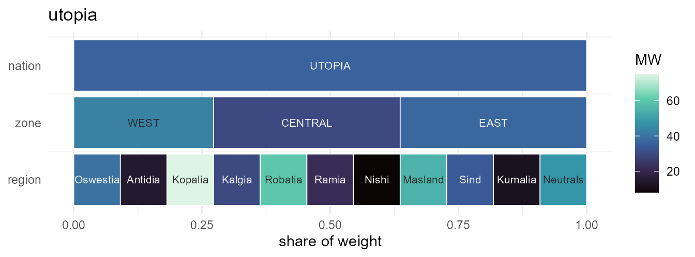
With geometry attached, type = "stack" draws the
layer-stack view — the same atoms dissolved at every geoframe,
stacked:
geoscale_autoplot(gs, type = "stack")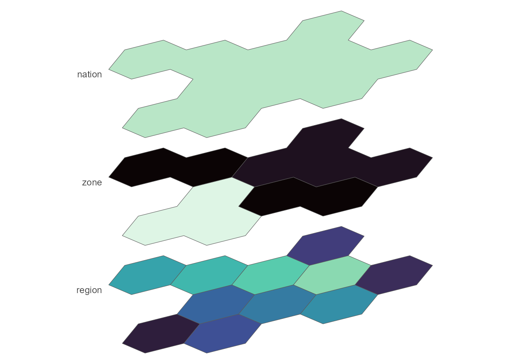
Points of view
The stack takes a view preset — from flat
"top-down" through the oblique family
("cavalier", "cabinet") and the axonometric
family ("military", "isometric",
"dimetric", "trimetric") to
"perspective", where receding planes shrink. Custom
obliques come via angle/ratio,
rotate= turns the plane (point North anywhere),
direction= flips the stack, and gap defaults
to planes almost touching:
# grouped by aspect so tall and flat views don't squeeze each other
views <- c("top-down", "military", "isometric",
"dimetric", "trimetric", "cabinet",
"oblique", "cavalier", "perspective")
views |>
lapply(function(vw)
geoscale_autoplot(gs, type = "stack", view = vw) +
labs(title = vw) +
theme(plot.title = element_text(size = 9, hjust = 0.5))) |>
patchwork::wrap_plots(ncol = 3)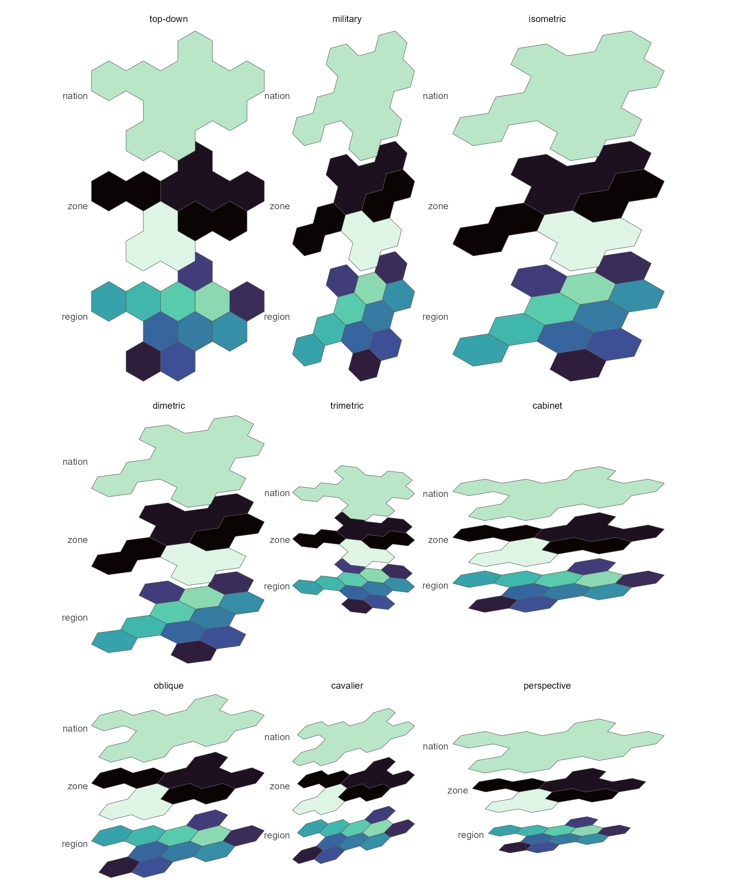
And geoscale_plot() is the one-call choropleth over the
same machinery:
geoscale_plot(gs, x, geoframe = "region", fill = "capacity",
palette = "G")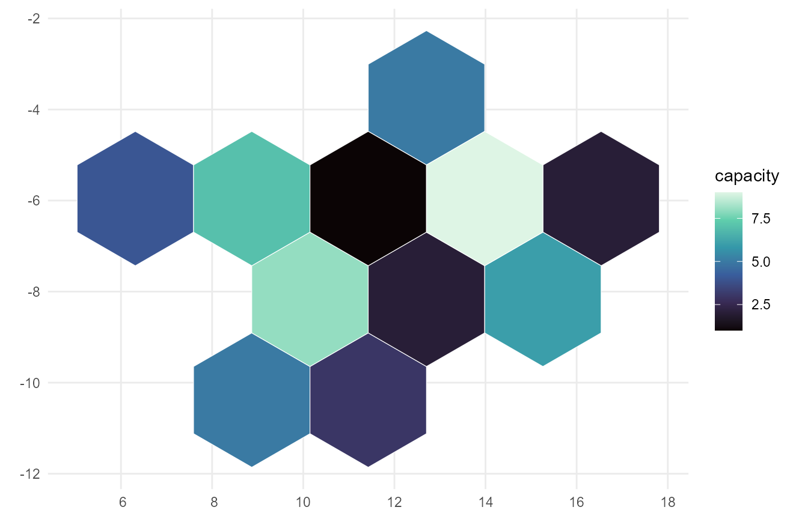
A real map: Iceland, with data attached
The same workflow on real boundaries. Natural Earth’s admin-1 layer gives nine units for Iceland that group into its eight regions (landshluti) — a genuinely ragged hierarchy, because Reykjavik and the surrounding capital area are separate features of one region:
s <- ne_source(geoframe = "states", country = "Iceland")
d <- as.data.frame(s)
isl <- geoscale_from_leaftable(
data.frame(country = "ISL",
landshluti = d$gn_name,
unit = d$iso_3166_2),
geoframes = c("country", "landshluti", "unit"),
key = "unit", name = "iceland"
) |>
attach_geometry_geoscale(s, by = "iso_3166_2", geoframe = "unit") |>
add_area_geoscale(name = "km2")
isl
#> Geoscale: iceland
#> Geoframes (3, coarsest first):
#> - country (1)
#> - landshluti (8)
#> - unit (9)
#> Atoms: 9
#> Weights: km2 (default: km2)
#> CRS: WGS 84
#> Geometry: attached (9 features)add_area_geoscale() just attached real data — equal-area
km² per unit — which is also the object’s default weight. Drawn straight
from the leaftable:
lt <- isl@leaftable
ggplot(tibble(unit = lt$region, km2 = lt$km2)) +
geom_geoscale(gs = isl, z = "km2", geoframe = "unit",
colour = "white", linewidth = 0.3) +
scale_fill_viridis_c(option = "G", trans = "sqrt") +
labs(title = "Iceland's nine Natural Earth units, by area",
fill = "km2") +
theme_geoscale()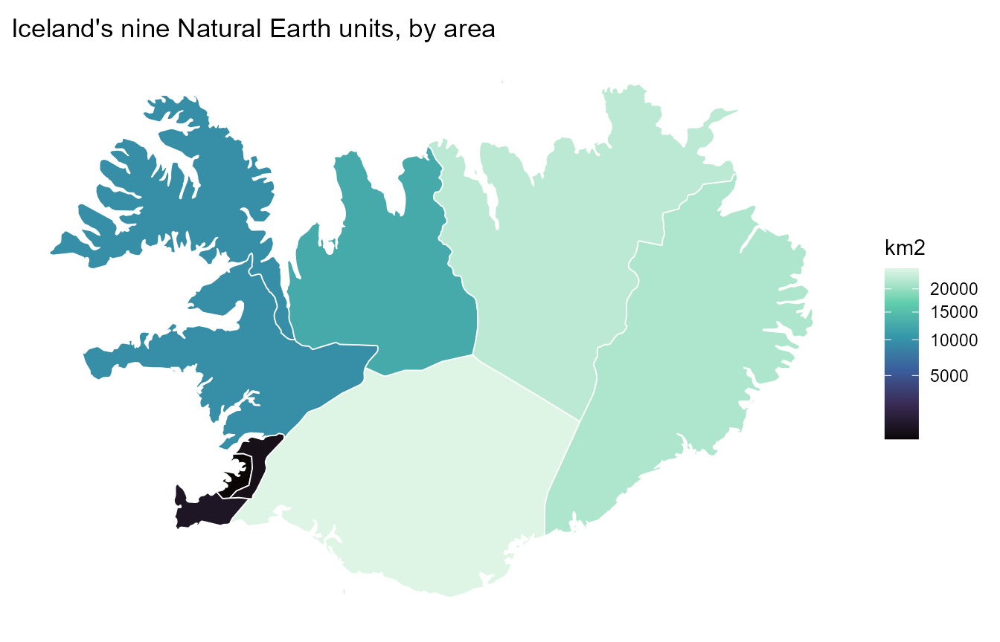
And the full loop in one pipeline: a national total split down to the
regions by area (rule = "sum" conserves it), drawn at the
landshluti geoframe — where the two capital-area units render
as one region:
tibble(country = "ISL", capacity_mw = 3000) |>
recast_geoscale(isl, from = "country", to = "landshluti",
rule = "sum", weight = "km2") |>
ggplot() +
geom_geoscale(gs = isl, z = "capacity_mw", geoframe = "landshluti",
colour = "white", linewidth = 0.3) +
scale_fill_viridis_c(option = "G") +
labs(title = "A 3 GW national total, split by area across 8 regions",
fill = "MW") +
theme_geoscale()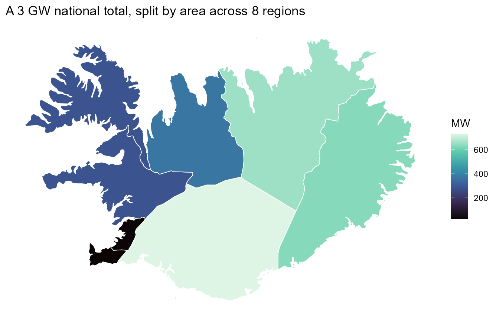
One resource, three geoframes
Model design is choosing a resolution. The wind-cluster Geoscale from the get-started vignette carries Iceland’s mean wind speed on its cluster atoms; recasting the same values up the hierarchy shows exactly what each aggregation keeps — the temporal twin of this figure (one wind year at three calendar resolutions) lives in the timescales visualization vignette:
iw <- readRDS("../../data-raw/iceland_wind.rds")
for (gf in c("cluster", "landshluti", "country")) {
d <- if (gf == "cluster") iw$wind else
recast_geoscale(iw$wind, iw$gs, from = "cluster", to = gf,
rule = "weighted_mean", weight = "km2")
print(geoscale_plot(iw$gs, d, geoframe = gf, fill = "wind",
palette = "G") +
labs(title = paste("Iceland mean wind speed at:", gf),
fill = "m/s"))
}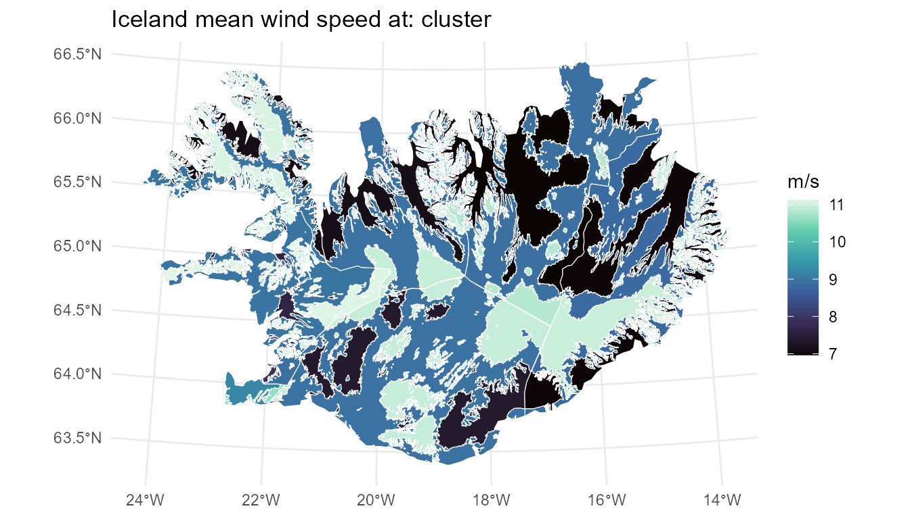
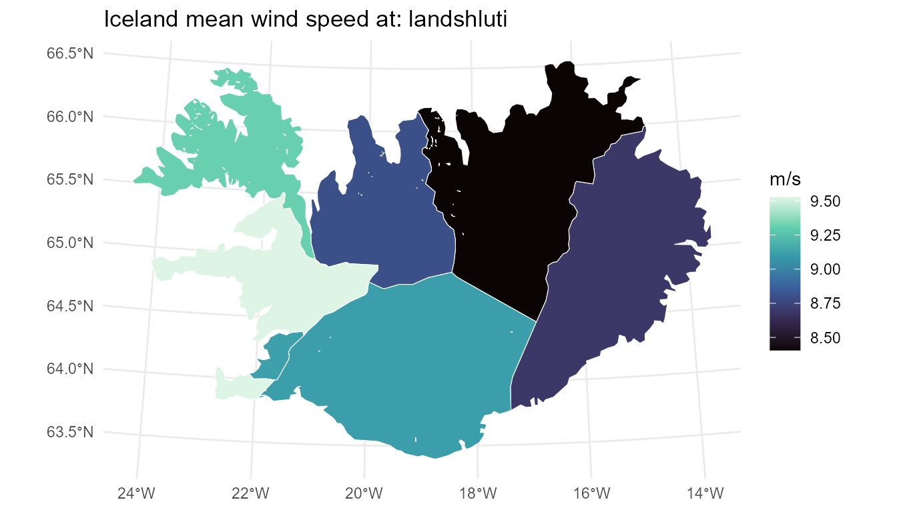
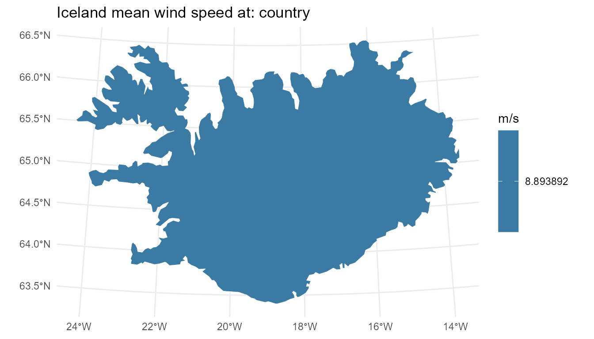
See also
-
vignette("geoscales")— the 5-minute tour. -
vignette("data-manipulation")— the conversion pipelines feeding these maps. - timescales’ Visualization with ggplot2 vignette — the temporal sibling: same contract, calendar heatmaps and wall calendars instead of choropleths.